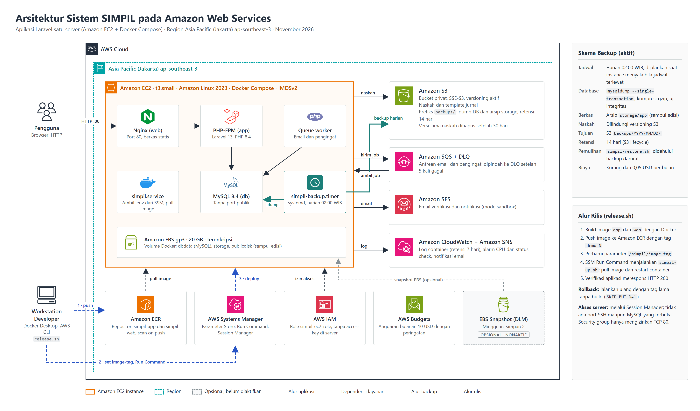

| Versi | 1.0 |
| Tanggal | 18 November 2026 |
| Region AWS | Asia Pacific (Jakarta), ap-southeast-3 |
| Akun AWS | 940253214690 |
| Versi aplikasi | Image demo-5 |
SIMPIL berjalan pada satu instance Amazon EC2 yang menjalankan aplikasi Laravel dalam container Docker Compose (Nginx, PHP-FPM, queue worker, dan MySQL). Berkas naskah disimpan di Amazon S3, antrean pekerjaan memakai Amazon SQS, email dikirim melalui Amazon SES, dan log serta alarm dipantau dengan Amazon CloudWatch. Rahasia aplikasi disimpan di AWS Systems Manager Parameter Store, sehingga tidak ada kredensial yang tersimpan di kode maupun di server.
simpil-backup.timer berstatus enabled dan active. Uji backup pertama berhasil pada 18 November 2026 pukul 06.52 WIB (dump database 15 KB, arsip storage 1,8 MB).backups-retensi-14-hari dan naskah-versi-lama-30-hari sudah terpasang.
Pengguna mengakses aplikasi melalui HTTP port 80 yang dilayani Nginx. Permintaan diteruskan ke PHP-FPM (Laravel), yang membaca dan menulis data ke MySQL, menyimpan naskah ke S3, serta mengirim pekerjaan email ke SQS. Queue worker mengambil pekerjaan dari SQS dan mengirim email melalui SES. Seluruh log container dikirim ke CloudWatch Logs. Setiap hari pukul 02.00 WIB, timer backup membuat dump MySQL dan arsip storage, lalu mengunggahnya ke S3.
| Layanan | Sumber daya | Konfigurasi |
|---|---|---|
| Amazon EC2 | simpil-demo (i-08ec05681c56b84de) | Tipe t3.small, Amazon Linux 2023, Docker Compose. IMDSv2 diwajibkan. IP publik berubah setiap kali instance dihentikan lalu dinyalakan (tanpa Elastic IP). Startup otomatis lewat simpil.service (systemd). |
| Amazon EBS | vol-028df7fdac2f42f76 | gp3, 20 GB, 3.000 IOPS, 125 MB/s, terenkripsi. Menyimpan volume Docker dbdata (MySQL), storage, dan publicdisk (sampul edisi). |
| Security group | simpil-sg | Inbound hanya TCP 80 dari 0.0.0.0/0. Port SSH (22) dan MySQL (3306) tidak dibuka. |
| AWS IAM | Role simpil-ec2-role, instance profile simpil-ec2-profile | Policy inline simpil-app: akses objek bucket S3 aplikasi, SQS simpil-queue, kirim email SES, pull image ECR, tulis CloudWatch Logs, baca parameter /simpil/env. Ditambah managed policy AmazonSSMManagedInstanceCore. Tidak ada access key di server. |
| AWS Systems Manager | Parameter Store, Run Command, Session Manager | /simpil/env (SecureString): isi berkas .env aplikasi. /simpil/image-tag (String): tag image yang dijalankan. Run Command dipakai untuk deploy dan pemasangan backup; Session Manager untuk akses shell tanpa SSH. |
| Amazon ECR | simpil-app, simpil-web | Scan on push aktif, tag mutable. Tag aktif demo-5, tag sebelumnya demo-4 tetap disimpan untuk rollback. |
| Amazon S3 | simpil-docs-940253214690 | Privat (seluruh Block Public Access aktif), enkripsi SSE-S3 (AES-256), versioning aktif. Berisi naskah, template jurnal, dan prefiks backups/. |
| S3 Lifecycle | Pada bucket di atas | backups-retensi-14-hari: objek backups/ dihapus setelah 14 hari, versi lama setelah 1 hari. naskah-versi-lama-30-hari: versi lama naskah dihapus setelah 30 hari dengan 3 versi terbaru tetap disimpan. |
| Amazon SQS | simpil-queue, simpil-queue-dlq | Visibility timeout 120 detik, retensi pesan 4 hari. Pesan dipindah ke DLQ setelah 5 kali gagal diproses. |
| Amazon SES | 1 identitas email terverifikasi | Mode sandbox (hanya ke alamat terverifikasi), kuota 200 email per 24 jam. |
| CloudWatch Logs | /simpil/ec2 | Stream app, queue, dan web. Retensi 7 hari. |
| CloudWatch Alarms | simpil-cpu-tinggi, simpil-status-check | CPU di atas 80% selama 2 × 5 menit; status check gagal selama 2 × 1 menit. Keduanya mengirim notifikasi ke SNS. |
| Amazon SNS | simpil-alerts | Satu langganan email untuk notifikasi alarm. |
| AWS Budgets | simpil-bulanan | Anggaran bulanan 10 USD dengan peringatan email. |
| Amazon Data Lifecycle Manager | Belum dibuat | Opsional. Templat deploy/backup/dlm-ebs-snapshot.json: snapshot mingguan setiap Minggu pukul 02.00 WIB, menyimpan 2 snapshot terakhir. |
| Data | Lokasi utama | Perlindungan |
|---|---|---|
| Database MySQL | Volume dbdata di EBS | Dump harian ke S3 (db-*.sql.gz), retensi 14 hari. |
| Sampul edisi dan storage | Volume storage dan publicdisk | Arsip harian ke S3 (storage-*.tar.gz), retensi 14 hari. |
| Naskah dan template | Bucket S3 | Versioning S3; versi lama disimpan 30 hari. |
| Konfigurasi dan rahasia | SSM Parameter Store | Dikelola AWS; nilai dapat dibuat ulang dengan deploy/aws/put-env-ssm.ps1. |
| Image aplikasi | Amazon ECR | Tag lama tetap tersimpan dan dapat dipakai untuk rollback. |
| Seluruh disk instance | Volume EBS | Opsional: snapshot EBS mingguan melalui DLM (belum aktif). |
/usr/local/bin/simpil-backup.sh. Bila instance sedang mati pada jam tersebut, backup dijalankan segera setelah instance menyala (Persistent=true).mysqldump --single-transaction di dalam container database, sehingga snapshot konsisten diambil tanpa mengunci tabel dan aplikasi tetap dapat diakses.storage/app diarsipkan dari container aplikasi.s3://simpil-docs-940253214690/backups/YYYY/MM/DD/ menggunakan IAM Role instance. Tanggal folder memakai zona waktu UTC.| Berkas | Fungsi |
|---|---|
deploy/backup/simpil-backup.sh | Membuat dump database dan arsip storage, lalu mengunggahnya ke S3. |
deploy/backup/simpil-restore.sh | Menampilkan daftar backup dan memulihkan data dari tanggal tertentu. |
deploy/backup/simpil-backup.service, .timer | Unit systemd untuk penjadwalan harian. |
deploy/backup/s3-lifecycle.json | Aturan retensi bucket S3. |
deploy/backup/dlm-ebs-snapshot.json | Kebijakan snapshot EBS mingguan (opsional). |
deploy/backup/install.sh | Memasang skrip dan timer ke EC2 melalui SSM, lalu memasang lifecycle S3. |
Seluruh perintah dijalankan dari root repositori menggunakan Git Bash di workstation yang sudah login AWS CLI (aws sts get-caller-identity menampilkan akun 940253214690). Instance EC2 harus dalam keadaan running. Perintah yang diawali sudo dijalankan di server melalui Session Manager (Konsol EC2, pilih instance, lalu Connect, lalu Session Manager).
Di server (Session Manager):
systemctl is-enabled simpil-backup.timer # enabled = aktif systemctl list-timers simpil-backup.timer # jadwal berikutnya journalctl -u simpil-backup.service -n 20 # hasil backup terakhir
Dari workstation, melihat berkas backup di S3:
aws s3 ls s3://simpil-docs-940253214690/backups/ --recursive --human-readable
Backup harian saat ini sudah aktif. Prosedur ini diperlukan bila instance EC2 diganti atau dibuat ulang, karena skrip boot (user-data) belum memasang backup secara otomatis, atau bila backup pernah dinonaktifkan.
bash deploy/backup/install.sh
Skrip akan memasang simpil-backup.sh, simpil-restore.sh, dan unit systemd ke server melalui SSM Run Command, mengaktifkan timer, lalu memasang aturan lifecycle S3. Keberhasilan ditandai status Success dan baris simpil-backup.timer pada daftar timer.
'charmap' codec can't encode character, jalankan terlebih dahulu: export PYTHONUTF8=1 PYTHONIOENCODING=utf-8. Pemasangan aman diulang.bash deploy/backup/install.sh --no-timer
Skrip tetap terpasang sehingga backup manual masih dapat dijalankan. Berkas backup yang sudah ada di S3 tidak dihapus dan akan terhapus otomatis sesuai retensi 14 hari.
Disarankan sebelum perubahan besar, misalnya migrasi data atau rilis versi baru.
sudo simpil-backup.sh
Atau dari workstation tanpa membuka sesi server:
aws ssm send-command --region ap-southeast-3 --instance-ids i-08ec05681c56b84de \
--document-name AWS-RunShellScript \
--parameters '{"commands":["systemctl start simpil-backup.service"]}'
YA, lalu otomatis membuat backup darurat kondisi saat ini sebelum menimpa. Aplikasi dan worker dihentikan sementara selama proses berlangsung.sudo simpil-restore.sh # daftar backup yang tersedia sudo simpil-restore.sh 2026/11/17 # pulihkan database dan storage sudo simpil-restore.sh 2026/11/17 db # pulihkan database saja
Tanggal yang digunakan adalah nama folder di S3 (UTC). Bila ada beberapa backup pada tanggal yang sama, yang terbaru dipakai. Setelah pemulihan, periksa aplikasi melalui browser.
Backup baru terbukti bermanfaat bila dapat dipulihkan. Disarankan menguji minimal sekali per semester pada lingkungan uji. Cara yang tidak mengganggu data produksi adalah mengunduh dump terbaru, lalu memuatnya ke MySQL lokal:
aws s3 cp s3://simpil-docs-940253214690/backups/2026/11/17/db-20261117T235220Z.sql.gz . gunzip -c db-20261117T235220Z.sql.gz | mysql -u root -p simpil_uji
Snapshot EBS menyimpan salinan seluruh disk, termasuk sistem operasi dan semua volume Docker. Lapisan ini berguna bila instance rusak total. Biaya snapshot di Region Jakarta sekitar 0,055 USD per GB-bulan untuk blok yang terpakai; untuk disk ini diperkirakan 0,2 hingga 1 USD per bulan.
aws dlm create-default-role --region ap-southeast-3
aws dlm create-lifecycle-policy --region ap-southeast-3 --state ENABLED \ --description "simpil mingguan" \ --execution-role-arn arn:aws:iam::940253214690:role/AWSDataLifecycleManagerDefaultRole \ --policy-details file://deploy/backup/dlm-ebs-snapshot.json
aws dlm get-lifecycle-policies --region ap-southeast-3. Snapshot pertama muncul setelah jadwal Minggu berikutnya di Konsol EC2, menu Snapshots.Menonaktifkan sementara atau menghapus kebijakan (gunakan PolicyId dari perintah verifikasi):
aws dlm update-lifecycle-policy --region ap-southeast-3 --policy-id <PolicyId> --state DISABLED aws dlm delete-lifecycle-policy --region ap-southeast-3 --policy-id <PolicyId>
Prosedur penghapusan seluruh sumber daya (deploy/aws/TEARDOWN.md) ikut menghapus bucket S3 beserta folder backups/. Unduh arsip terlebih dahulu bila masih diperlukan:
aws s3 sync s3://simpil-docs-940253214690/backups ./backups-arsip
aws ec2 start-instances --instance-ids i-08ec05681c56b84de --region ap-southeast-3 aws ec2 stop-instances --instance-ids i-08ec05681c56b84de --region ap-southeast-3
Saat instance dihentikan, biaya komputasi berhenti, tetapi biaya EBS dan S3 tetap berjalan. Data tidak hilang. Setelah dinyalakan, IP publik berubah dan aplikasi menyesuaikan APP_URL secara otomatis.
Prasyarat: Docker Desktop menyala dan instance dalam keadaan running.
bash deploy/aws/release.sh # rilis dengan tag otomatis bash deploy/aws/release.sh demo-6 # rilis dengan tag tertentu SKIP_BUILD=1 bash deploy/aws/release.sh demo-4 # rollback ke tag lama
Skrip membangun image, mengunggahnya ke ECR, memperbarui /simpil/image-tag, lalu memerintahkan server menarik image baru melalui SSM Run Command. Database tidak di-restart sehingga data tetap utuh. Disarankan menjalankan backup manual (5.4) sebelum rilis yang mengandung migrasi database.
Dokumen ini disusun berdasarkan konfigurasi AWS yang dibaca langsung pada 18 November 2026. Sumber dokumen: docs/dokumen_infrastruktur_backup_simpil.html.